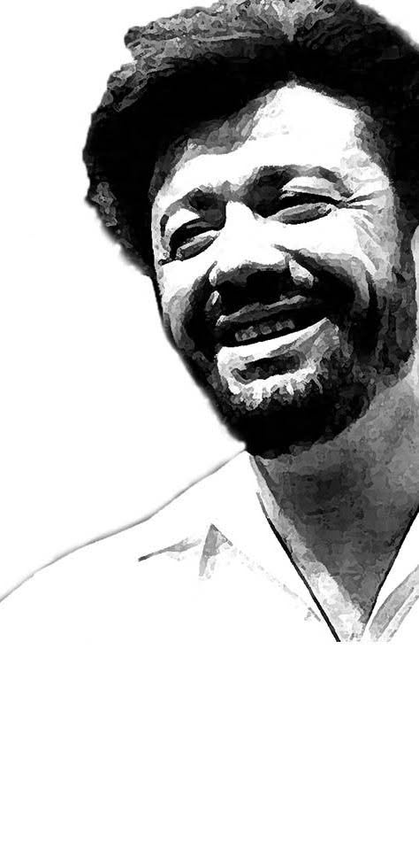

Le rebelle
(À Matoub Lounès mort pour ses idées)
Un poète peut-il mourir ?
Quand ton souffle brûle encore les pages,
Quand ton verbe enfiévré provoque l’orage,
Quand chaque mot, gravé dans la terre et les pierres,
Résonne comme un cri, écho d’une colère.
Ils ont cru qu’en tuant ta voix,
Ils éteindraient l’incendie des cœurs.
Ils ont cru que le silence froid
Etoufferait la flamme, la ferveur.
Mais la montagne vibre et s’entête,
Elle porte encore ta voix de tempête.
Ô Kabylie, terre rebelle,
Rouge du sang et des étincelles,
Combien d’âmes en toi s’élancent,
Portant tes chants comme une lance,
Refusant la peur, défiant l’oubli,
Gardant le verbe de l’infini.
Matoub, frère des étoiles, des pierres, et des vents,
Ta voix survit, en mille accents.
Leur violence n’a pas fait plier ton âme.
Ton chant a traversé les balles, les flammes,
Ton absence, une présence sacrée,
Dans chaque souffle, chaque pas, enracinée.
Un poète peut-il mourir ?
Peut-on éteindre l’espoir, le désir ?
Dans chaque vers, une lueur persiste,
Dans chaque murmure, ta voix résiste.
Même si les tyrans assassinent,
Les poètes survivent, leur cri s’illumine.
La Kabylie se soulève, et Matoub vit encore,
Car un poète, non, un poète jamais ne meurt.
Djamel Metref
At Yenni le 27 juin 2025

← Tous les poèmes